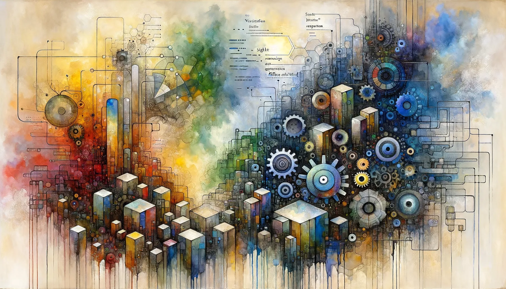

Eric J Ma's Website
written by Eric J. Ma on 2025-10-18 | tags: llm dspy llamabot python frameworks extraction schema prompting expenses automation
In this blog post, I share my hands-on comparison of DSPy and LlamaBot for building structured LLM applications, using a real-world expense extraction example. I explore how each framework handles schema design, type safety, and prompt optimization, highlighting their strengths and trade-offs. Curious which approach might best fit your next LLM project?
Read on... (1111 words, approximately 6 minutes reading time)written by Eric J. Ma on 2025-10-14 | tags: workflow tdd automation agents refactoring documentation planning memory iteration shortcuts
In this blog post, I share hard-earned lessons from using AI coding agents on real projects. I discuss why effective agent use goes beyond good prompts, highlighting the importance of systematic workflows, external memory, and fast iteration. I cover practical patterns for planning, testing, refactoring, and documentation, plus tips for integrating agents into your development process. Curious how these strategies can help you get the most out of coding agents?
Read on... (2366 words, approximately 12 minutes reading time)written by Eric J. Ma on 2025-10-10 | tags: github ssh git accounts configuration authentication troubleshooting setup remotes workflow
In this blog post, I share how I solved the challenge of using multiple GitHub accounts on the same computer by configuring separate SSH keys and updating SSH and Git settings. I walk through step-by-step instructions, troubleshooting tips, and ways to automate account switching for different repositories. If you've ever struggled with Git pushing to the wrong account or want a smoother workflow for personal and volunteer projects, this guide is for you. Curious how to make Git always use the right account without hassle?
Read on... (1282 words, approximately 7 minutes reading time)written by Eric J. Ma on 2025-10-04 | tags: llm agents coding automation markdown testing package memory workflow scripts
In this blog post, I share how using AGENTS.md—a new open standard for AI coding agents—lets you teach your LLM assistant project-specific preferences that persist across sessions. I cover practical tips like enforcing markdown standards, specifying test styles, and introducing new tools, all by updating AGENTS.md. This approach turns your agent into a trainable teammate, not just a forgetful bot. Want to know how to make your coding agent smarter and more aligned with your workflow?
Read on... (1468 words, approximately 8 minutes reading time)written by Eric J. Ma on 2025-10-01 | tags: biotech ultralearning datascience lifesciences software learning career skills modeling feedback
In this blog post, I share how effective biotech data scientists master both life sciences and software skills by applying Scott Young's ultralearning principles. Drawing from my own experience, I explain how to strategically bridge knowledge gaps, focus on real-world projects, and alternate deep dives between domains for continuous growth. Want to know which ultralearning strategies can help you level up your biotech data science career?
Read on... (4608 words, approximately 24 minutes reading time)written by Eric J. Ma on 2025-09-02 | tags: python pixi uv mkdocs automation ai scaffolding integration tooling workflows
In this blog post, I share how I've completely revamped The Data Science Bootstrap Notes for 2025, reflecting major changes in Python tooling and best practices. I discuss moving from conda to pixi and uv, automating project setup with pyds-cli, integrating AI thoughtfully, and embracing CI/CD for reproducible workflows. I also highlight the core philosophies that guide my approach and explain what outdated advice I've removed. Curious how these changes can help you build scalable, modern data science projects?
Read on... (1132 words, approximately 6 minutes reading time)written by Eric J. Ma on 2025-09-01 | tags: productivity negotiation presentations llm automation communication competencies ghostwriting updates ai
In this blog post, I share 10 practical ways I've used AI and large language models to save time and boost my effectiveness at work—beyond just coding and emails. From crafting tailored presentations and prepping for negotiations to automating tedious forms and practicing tough conversations, these strategies help you focus on what really matters. Want to know how AI can help you work smarter, not harder, beyond 2025?
Read on... (2201 words, approximately 12 minutes reading time)written by Eric J. Ma on 2025-08-24 | tags: biotech communication decisions statistics translation collaboration trust meetings probability stakeholders
In this blog post, I share practical strategies for data scientists and statisticians to communicate more effectively with lab scientists in biotech. Instead of overwhelming collaborators with methods, I explain how to focus on decision-making, translate complex analyses into actionable probabilities, and build trust through clarity. I also offer tips for structuring meetings and anticipating common questions. Want to know how to make your insights drive real decisions in the lab?
Read on... (3454 words, approximately 18 minutes reading time)written by Eric J. Ma on 2025-08-23 | tags: python runtime llm security namespace compilation execution functions toolbot monkeypatching
In this blog post, I share how I discovered a powerful Python trick: dynamically changing a function's source code at runtime using the compile and exec functions. This technique enabled me to build more flexible AI bots, like ToolBot, that can generate and execute code with access to the current environment. While this opens up exciting possibilities for LLM-powered agents and generative UIs, it also raises serious security concerns. Curious how this hack can supercharge your AI projects—and what risks you should watch out for?
Read on... (2290 words, approximately 12 minutes reading time)written by Eric J. Ma on 2025-08-15 | tags: productivity workflows evaluation metrics business science models ai tools measurement
In my latest post, I share how large language models are changing the data science landscape—not by replacing us, but by making us more effective and opening up new opportunities to build custom AI solutions. I discuss why our skills in measurement and evaluation are more valuable than ever. Curious how data scientists can thrive in the LLM era?
Read on... (914 words, approximately 5 minutes reading time)